Kitami
Kitami · Hokkaido
Kitami
Highlighted on the Hokkaido map.
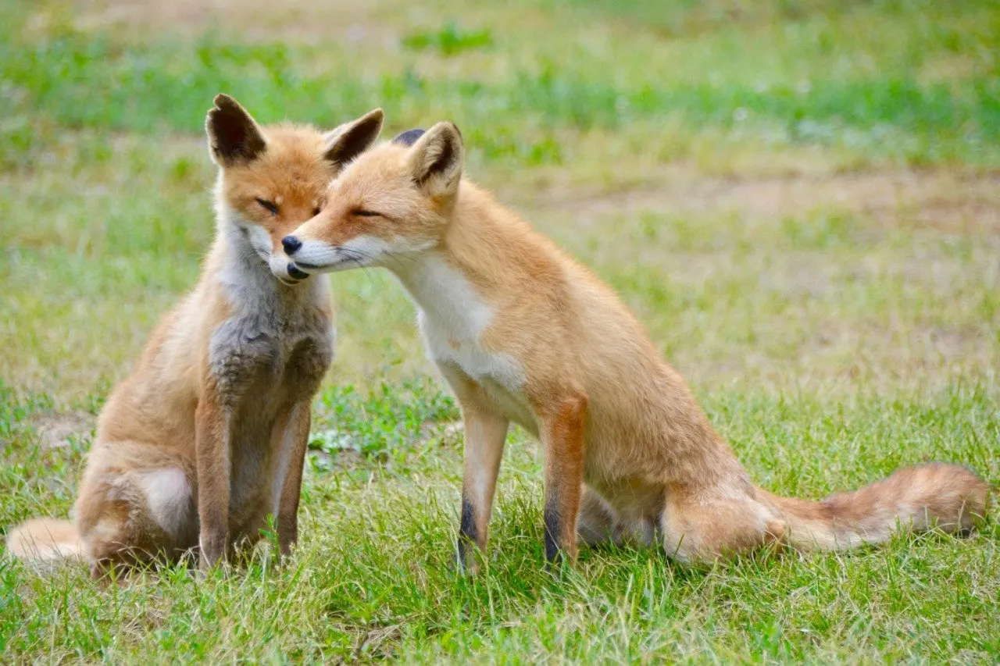
Stay
コンフォートホテル北見
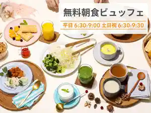
Konfootohoteru Kitami
北見天然温泉 ホテルルートイン北見大通西
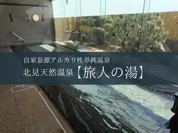
Kitami Tennen Onsen Hoteruruutoin Kitami Oodoori Nishi
東横ＩＮＮ 北見駅前

Touyoko I N N Kitami Ekimae
北見天然温泉 ホテルルートインＧｒａｎｄ北見駅前
Kitami Tennen Onsen Hoteruruutoin G R A N D Kitami Ekimae
北見ピアソンホテル
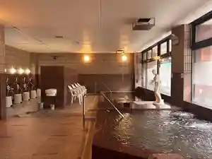
Kitami Piasonhoteru
スーパーホテル北見
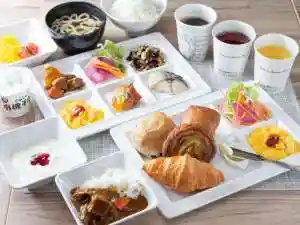
Suupaahoteru Kitami
天然温泉 常呂川の湯 ドーミーイン北見
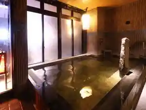
Tennen Onsen Tokoro Kawa No Yu Doomiiin Kitami
北見第一ホテル
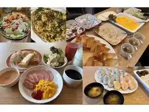
Kitami Daiichihoteru
ホテルクラウンヒルズ北見 ５条通り（ＢＢＨホテルグループ）
Hoterukuraunhiruzu Kitami 5 Jou Touri ( B B H Hoteruguruupu )
ホテルベルクラシック北見
Hoteruberukurashikku Kitami
ホテルパコジュニア北見
Hoterupakojunia Kitami
ホテルクラウンヒルズ北見別館（旧ルビーホテル）
Hoterukuraunhiruzu Kitami Bekkan ( Kyuu Rubiihoteru )
Dining
ちさん亭
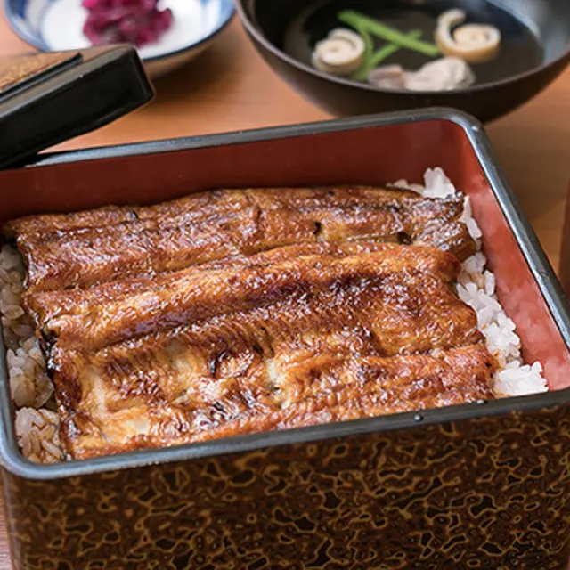
Chisan Tei
いろはにほへと 北見駅前店
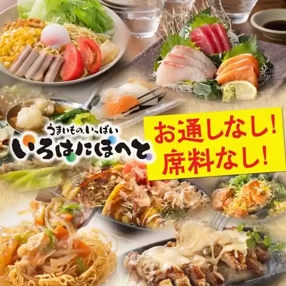
Irohanihoheto Kitami Ekimae Mise
北見ホルモン ぶんたろう 支店
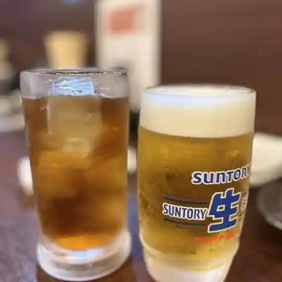
Kitami Horumon Buntarou Shiten
としお
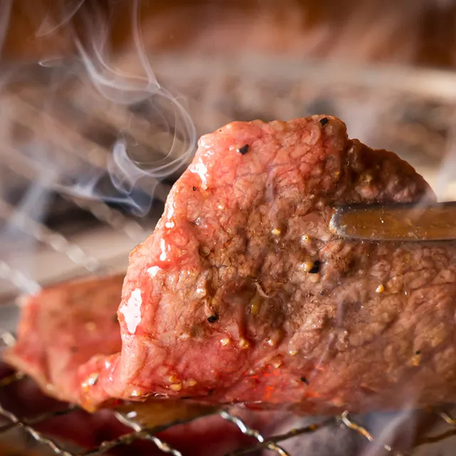
Toshio
北見やきにく 渡海
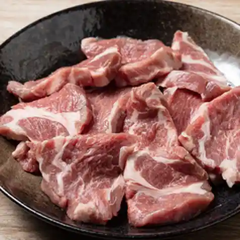
Kitami Yakiniku Tokai
北見ザンギ ぶんたろう
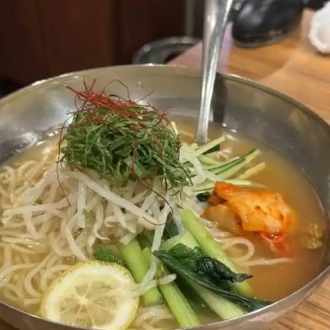
Kitami Zangi Buntarou
ホルモン・焼肉まる笑 柏陽店
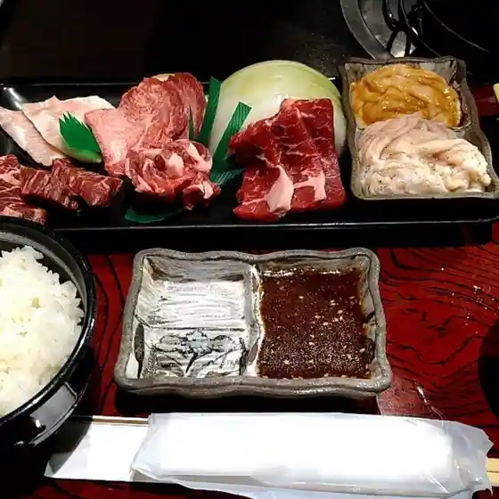
Horumon Yakiniku Maru Warai Kashiwa You Mise
白木屋 北見北4条西3丁目店

Shirokiya Kitami Kita 4 Jousai 3 Choume Mise
うまいっしょ家
Umaissho Ie
日本料理 雲
Nihonryouri Kumo
羊屋鮮肉
Hitsuji Ya Senniku
Meet SHOP あきら OKHOTSK KITAMI店
Meet Shop Akira Okhotsk Kitami Mise
サワーとお料理 れもん
Sawaa Too Ryouri Remon
居酒屋倶楽部
Izakaya Kurabu
やまねこ にゃお
Yamaneko Nyao
北見ホルモンぶんたろう 総本店
Kitami Horumon Buntarou Souhonten
山内農場 北見北5条西2丁目店
Yamauchi Noujou Kitami Kita 5 Jousai 2 Choume Mise
中華料理 瀋陽飯店
Chuukaryouri Shinyou Hanten
居酒屋はなまる亭
Izakaya Hanamaru Tei
海鮮ダイニング BiKuRa ルートインGrand 北見駅前店
Kaisen Dainingu Bikura Ruutoin Grand Kitami Ekimae Mise
花鳥風月
Kachoufuugetsu
BISTRO CAPRICE
Bistro Caprice
焼肉ホルモンまる笑 4条店
Yakiniku Horumon Maru Warai 4 Jou Mise
手巻屋 こりじゃ
Temaki Ya Korija
Sights
Kita Kitsune Ranch
Kita Kitsune Ranch